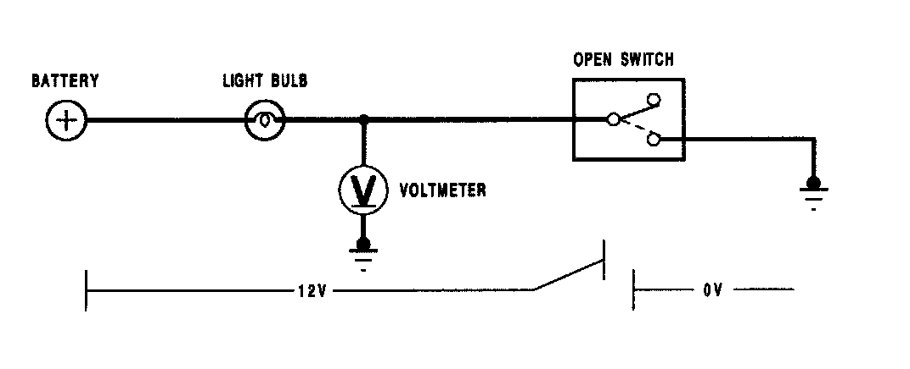
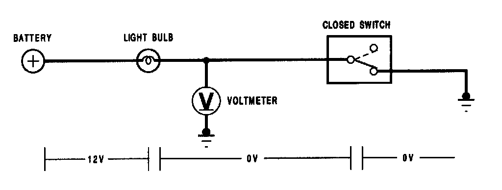
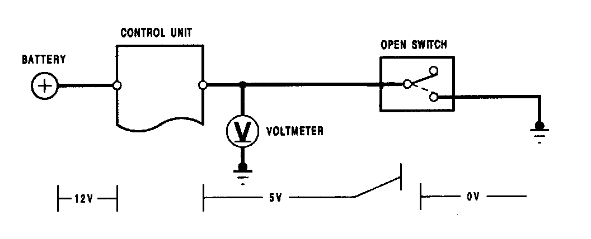
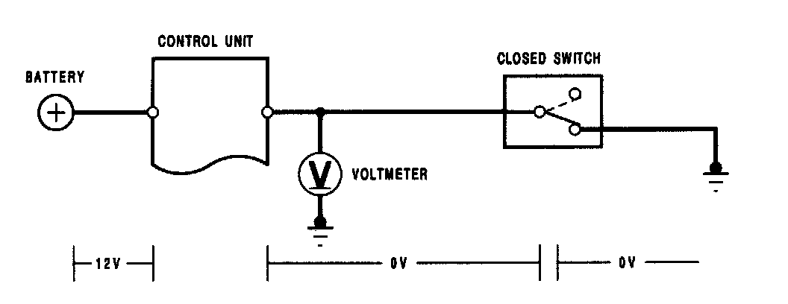
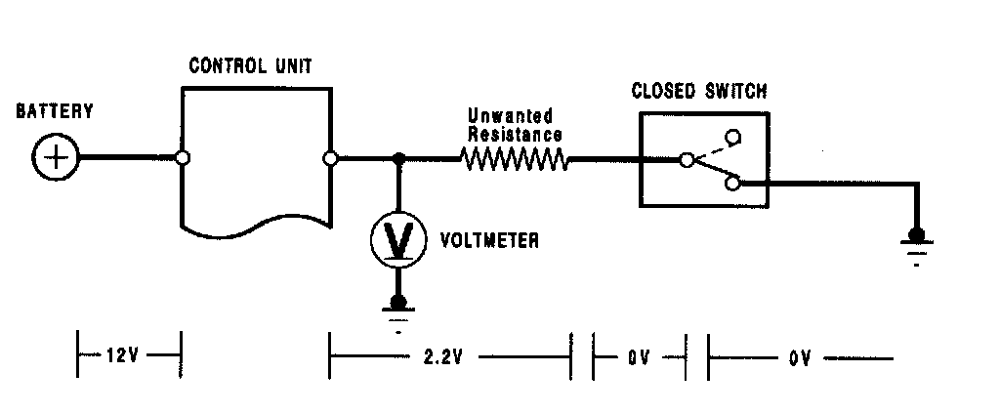
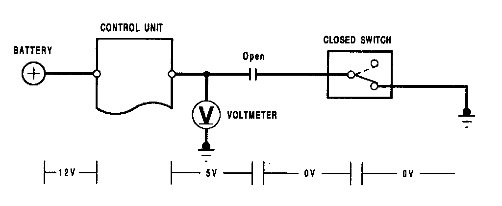
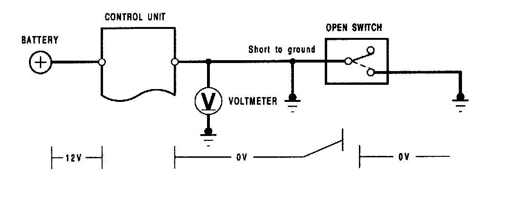

Seat Belt Systems: Description and Operation
Automatic Shoulder Seat Belt DescriptionThe automatic shoulder belt system is a combination of mechanical and electrical components. An electronic control unit monitors several switches to automatically control the movement of the belt. The control unit also monitors the shoulder belt electrical system, and will turn on a warning light and buzzer if it detects a malfunction. The shoulder belt will-lock if the car suddenly accelerates or decelerates in any direction, or if it tilts too far in any direction. The locking is done mechanically, and is not affected by the electrical components in the system.
Seat Belt Control Unit
The seat belt control unit operates the shoulder belt motors, shoulder belt retractor solenoids, seat belt indicator light, and beeper. The control unit decides where to position the shoulder belt by monitoring switches in the door latches and in the seat belt tracks. It also continuously monitors those same switches to determine whether the shoulder belts are in the correct position. If the control unit detects a belt in the wrong position, it turns on the indicator light and beeper.
Understanding Reference Voltage
The control unit uses a "reference" voltage to monitor the switches. The following illustrations show how the voltage can change in portions of a circuit, depending on the position of a switch. These changes enable the control unit to determine whether a switch is open or closed. A simple light bulb circuit can be used to show how this "reference" voltage works:

In the image, the switch is open; the circuit is not complete. A voltmeter would indicate battery voltage all the way up to the open switch.

In the image, the switch is closed; the circuit is complete. A voltmeter would indicate battery voltage only up to the light bulb. There is no voltage after the bulb because it's "used up" across the bulb filament. The light bulb is the load.

In the image, the switch is open; the circuit is not complete. There is battery voltage from the battery to the control unit, and a reference voltage sent by the control unit to the switch. A voltmeter would indicate battery voltage up to the control unit, and control unit reference voltage between the control unit and the open switch.

In the image, the switch is closed; the circuit is complete. A voltmeter would indicate battery voltage only up to the control unit. There is no voltage after the control unit because the control unit "used it up". The control unit is the load.
The control unit is supplied with the battery voltage. The control unit then sends a reference voltage to the switch. The reference voltage will change, depending on the position of the switch and the condition of the circuit. The change in voltage is what the control unit monitors to determine whether the switch is open or closed. If you check voltage at the control unit (between the control unit and the switch, with a digital voltmeter), the meter will pick up any excessive resistance, an open, or a short in the circuit. The following illustrations show how circuit voltage readings would change because of excess resistance, an open, or a short.

In the image, the switch is closed; the circuit is complete. The reference voltage is 2.2 V. The voltage should be zero with the switch closed, but the unwanted resistance in the circuit creates a second load (the first load is the control unit). Voltage is always used up across all the load(s) in a circuit as long as the circuit is complete (current is flowing). The 2.2 V measured are actually the voltage drop across the unwanted resistance.
The unwanted resistance may "confuse" the control unit as to whether the switch is open or closed because when the switch is closed, the reference voltage should be zero. As the unwanted resistance becomes higher, the reference voltage will increase accordingly.

In the image, the switch is closed; the circuit should be complete. But since the wire between the control unit and the switch is open, the circuit is not complete'. The reference voltage will be exactly the same as if the switch were open.

In the image, the wire from the control unit to the switch is shorted to body ground. This completes the circuit, even though the switch is still open. The reference voltage will be the same as if the switch were closed.
Retractor
When either front door is opened, the seat belt control unit is signalled by the door latch switch. The control unit energizes the shoulder belt retractor solenoid(s), and then moves the shoulder belt(s) to the appropriate position.
When the shoulder belt is moved from the rearward to forward position it must unwind from the retractor assembly. If it does not, the shoulder belt motor will stall. The retractor solenoid is energized to prevent the retractor from locking. If the retractor were to lock while the belt was being moved to/from the front/rear position, the motor could stall.
If the retractor solenoid is functioning properly, the following condition may still occur: it does not indicate any problem with the system. If there actually is a problem with the system, the indicator light will go on and the beeper will sound.
For the shoulder belt to travel forward the belt must unwind from the retractor. So, before the control unit signals the shoulder belt to move forward, the retractor solenoid is energized. If the shoulder belt is locked, and then the retractor solenoid is energized, it will remain locked (the solenoid cannot override the mechanical lock). The control unit signals the retractor motor to drive the belt forward, but, in this situation, the motor will stall.
NOTE: The retractor may be locked because of conditions. It may not be apparent the retractor is locked until the motor tries to drive the belt forward. If the retractor is locked, relieve the tension on the belt and allow it to retract to unlock the retractor.
Track Assembly
The shoulder belt track assembly consists of the shoulder belt motor, cables, tracks, a front position switch, a rear lock position switch (anchor), and a rear lock position switch (seat belt).
The shoulder belt track assembly contains the buckle receptacle for the shoulder belt. The control unit signals the motor to drive the shoulder belt forward and rearward, and monitors the switches to determine where the shoulder belt is positioned. It also monitors the rear lock position switch (seat belt) to determine whether the shoulder belt is buckled.